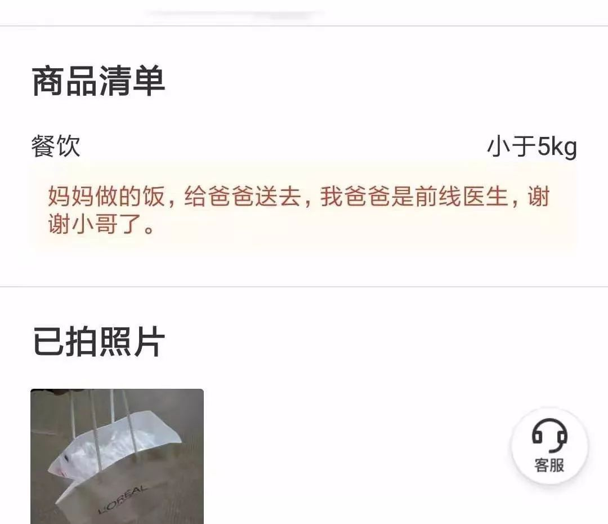
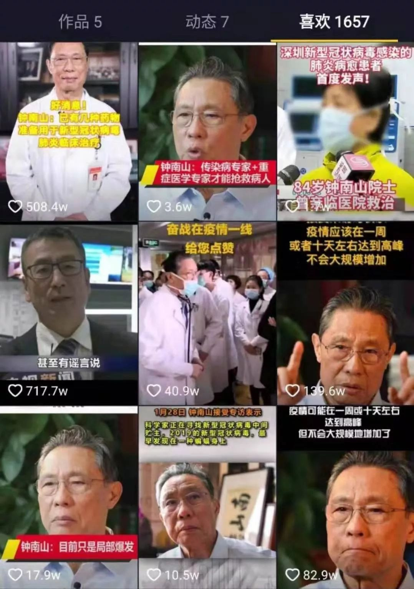

武汉“封城”的第一天
原文链接 备份链接 文 | 王彦入 王丹妮 程静之 殷盛琳 李晓芳 周航 叶雯 曾宪雯 编辑 | 王珊 陶若谷 33岁的刘科戴上两层口罩独自走进地铁，夹杂在路人中间。像他这样拉着行李箱的人并不少见，彼此间默契地保持着距离。三天前，他刚刚从 …
2020年新年，武汉新型冠状病毒肺炎爆发，随着疫情不断扩大，大多数武汉及湖北市民选择居家防疫。城市的服务者们如医护人员、外卖小哥坚守岗位，疫区的居民制作美食、一起刷抖音、看《囧妈》对抗防疫焦虑。我们看到疫情寒意之下，人们的生活仍在继续。
余强 武汉市汉阳区 金融从业者
*****在定点医院出生的女儿，是我最大的快乐*****
我家住得离这次疫情发源地之一的华南海鲜批发市场不远，妻子分娩的武汉市第一医院，也是离华南市场最近的三甲医院。
1月17日，妻子腹痛发作，我们赶紧送到医院，那时院内戴口罩的人还不多，武汉市内的情绪也比较乐观。次日，妻子诞下女儿，我们又住了三天，21号出院。后来我才知道，产女期间，武汉市第一医院在18日和21日分别有新型肺炎患者去世。感受特别明显的是，钟南山院士讲话的当天，整个医院所有人几乎都戴上了口罩。
回家后，感染的阴影一直压在我心里。年前最后两天，我准备回单位工作，领导了解我的情况后，担心传染，劝说我在家隔离好好照顾妻女。考虑到情势，我和弟弟幸运地在封城前一天购买足够一家吃半个月以上的肉蛋蔬菜。封城前十多个小时，弟弟和父亲又开车回到了江西老家，居家隔离。
现在，妻子和女儿身体状态都特别好，我在家忙进忙出，看着计步软件上，同事朋友们都只有可怜的一百步两百步，我高的时候居然有七千多步。忙着给女儿取名字，逗一逗看她笑，心里真是莫大满足，不忙的时候，我自己刷一刷抖音，看了《囧妈》，把时间充实起来。
我觉得自己很幸运，一种上天眷顾的幸运。这一阵子，我忽然明白了人们对热衷晒娃的痴迷，孩子真的太可爱了，现在的氛围下，在朋友圈晒娃不适合，我特地下载了抖音，在上面用视频记录女儿成长的点点滴滴。

梁天 武汉市武昌区 公司财务
*异地2000多公里，假装一起坐在电影院*
武汉封城的消息发布后，男友似乎比我更加紧张，每隔一会儿就要发来微信问问情况，确认我没有出门、没有发烧。
我们在武汉读大学时相识相恋，毕业后我在武汉，他在哈尔滨，异地两千多公里，感情依旧很好，本来说好过完春节到武汉见父母，定下结婚计划，可疫情发生后，也只好取消行程。
随着有关武汉的新闻增多，男友越来越不放心，尽管我一再强调家里物资充足、情况安好，但他不了解这边的真实状况，还是急得团团转。
刚开始我还觉得心烦，我只是在家隔离，不是被抓进去了，没必要这么担心。后来才反应过来，隔着大半个中国，外界消息真假难辨，他也难免跟着着急。
为了让他放松心情，我不停给他发去微博上的调侃截图，希望能缓解我们之间的情绪。刚数了下，这几天我一共给他发过二十八张截图，尽管现在疫情依旧紧张，但也许只有保持乐观，才有助于我们一起撑过去。
除夕夜，外面安静得出奇，我待在小屋里和男友视频，聊到以前上学时，一到寒暑假就要分开，从来没在一起过个新年，我们都很羡慕那些能一起过除夕、放烟花、去电影院看贺岁档的情侣。
说到这，他突然提议一起打开电脑，用西瓜视频同步播放《囧妈》，假装我们俩就坐在电影院。
于是，在网络的连接下，我们一起度过了一个特别的新年。

悟一 武汉市洪山区 外卖员
*****疫情中，我给医生送去妻子做的饭*****
封城之后，我和同事还在坚持送单。路上也冷清，除了出来采购的市民，街上能见到的大多是环卫工、外卖员和快递小哥。送餐的这几天，我也经历了不少温暖的故事。
1月26号，快收工时，我接到一个订单，备注上写着， “妈妈做的饭，给爸爸送去，我爸爸是前线医生，谢谢小哥了”。
我去取货地址取货，一个女人开了门，她说话非常客气，一直感谢我。随后给我一个手提袋，里面有包好的餐具和餐盒。我将这份爱心餐送到留下的地址——距离他们家大概2公里的一个酒店。
这家酒店离武昌医院比较近，我推测是医护人员下班后不回家，在这里集中住宿。单子上写着把餐送到801房间。我送到801，开门的人却说自己不是陈医生，陈医生住在隔壁房间。医院有事，他刚才又回去了。
不知道那天，他什么时候能吃上自己妻子做的饭。
1月27号晚8点多，由于电量不足，我的电动车抛锚了，换好电池后，我在路边抽烟，听到背后的一个小姐姐在喊:“武汉加油！”我突然觉得烟熏了眼睛。
订单不多的日子里，我晚上提早下班回到家大快朵颐，给妈妈打电话报平安，能早些睡觉就觉得很满足。我不是武汉人，在这里上了四年大学，不少亲朋都在这，也遇上给过我不少温暖的武汉人。武汉人么斯没见过？我相信，武汉一切都会好。

辉名 武汉市青山区 销售
*封城七天，在线看贺岁档给我们带来一丝慰藉*
两个朋友的妻子都感染了肺炎，还在救治中。小区里，保安“不要乱走”的提醒声被喇叭放大了好几倍。封城七天，我就出过两次门，一次是去买菜，另一次是给女儿买零食，下楼时，我摁电梯时都要犹豫半天。
由于封城，年前准备在电影院把贺岁档看个遍的愿望也无法实现了。大年初一，我们一家人熬夜在线看了《囧妈》，看到电影里妈妈唠叨儿子、儿子不耐烦的表情，我想到母亲，对女儿说，“你奶奶也唠叨。”说归说，其实我心里惦记母亲，我们家的小区和父母家只隔着两站路，但眼下，下次见面还不知道是什么时候。
女儿在一边埋怨说，“爸，你也唠叨啊”。我和妻子笑作一团，平时因为要盯着她做作业，难免会严厉些。在恐惧中生活了这么久，我不求什么成就，只希望家人平安快乐。
这场午夜电影，给我们家人带来了一丝丝快乐，我挺感恩徐峥导演的。我在留言区评论表达了感谢，不断收到陌生网友的回复“一定会平安”。
孔棕 湖北省咸宁市 研究生
抖音上的防疫视频，藏着妈妈的爱心
以往春节，爸妈都会和亲戚一起喝酒聚会，聊聊一年的家长里短，我们一帮小孩吃过饭就凑在一块打游戏，这些场景构成了我对过年的全部记忆。而这个不能走动的春节，注定有些特别。
家里只有我们三个人，简单吃了点年夜饭，谁也没有话题打破安静。爸妈赖在沙发上偶尔朗读几句来历不明的疫情消息，对着手机接连叹气，春节联欢晚会的热闹，显得家里越发冷清。我想了想，干脆拿来爸妈的手机，带他们打游戏。连打了几天，爸爸越来越入迷，每天缠着我一起玩游戏。
不会打游戏的妈妈，这几天在抖音上点赞了一千多个视频，还非要拉着我一起看。以前妈妈看的视频大多是彩妆搭配和明星动态，她最爱美，一直保持着一颗少女心，总念叨着等以后有时间了，也要出去走走，拍些和视频里一样好看的照片。
昨天，我点开她的抖音界面，发现一直很少关心新闻时事的妈妈，最近的点赞全部变成了各种科普视频。不再看乱七八糟的文章，她心态平稳了不少，反倒开始教育我不要惊慌。
现在，看着爸妈能从压抑的氛围中脱离出来，我也多少安心了一点。

yuki 武汉市江汉区 单位职员
隔离半个月，我靠妈妈做的美食对抗焦虑
元旦过后不久，我所在的单位就有了疑似病例，医生判断基本是肺炎后，我就回到了家中隔离。那时候，父母都还不太在意，钟南山院士出来讲话前，他们不听我的劝阻，还走路去汉口火车站接亲友。
武汉封城当天，我们一家去超市买了菜，老妈说家里的猪肉很多。收拾后才发现，猪肉只有不到一斤，倒是囤了不少鸡肉、牛肉和羊肉。隔离防疫，全家人都宅在一起，这种时候挺难得的，每天吃了睡睡了吃，打打游戏看新闻资讯，看火神山医院的建设。特别惊喜的是，我发现妈妈做菜的花样还挺多。
物资有限，妈妈每餐都保证有三个菜，她把大白菜梆子切碎腌制后，做成了辣菜。焦虑降低了口舌的感受力，这道小菜深受我的喜爱，我决定为了妈妈开抖音，拍下短视频记录她做菜的过程。为此，妈妈还做出了那种餐饮店里才有的牛肉粉，味道也很棒。好好吃饭外，我每天都会看同事们身体状态的统计，看着大家都健康着，我也特别开心。
唯一的问题是，牛肉硬不易消化，我每天在家不动弹，消化上有一些问题。1月28日，我决定要达到1000步，抱持运动量帮助消化。我在家里卧室、客厅来回溜达了好多圈，第二天一看，还是只有924步。
我认真反思了一下，还是房子太小，等疫情结束，我要努力了。

张君 湖北省襄阳市 图书编辑
*北漂9年，一壶酒、一场电影让家人靠近*
我在北京上大学，毕业后又留在北京，至今9年了。因为我选择北漂，婚恋问题也不顺，我和父母的交流一直磕磕绊绊。
平时和父母相聚不多，今年村里不让拜年，一家人宅在一起，父母意外地很高兴。为了这个，父母开始想法设法做好吃的。父亲开了一坛子老酒，说是放了5年的陈酿，他兴致勃勃地起开封条，将大坛子里的酒倒入玻璃瓶中，酒香很快在屋里漾了开来
酒端上桌子后，我看到杯子里有些浑浊，下意识皱了下眉。他忙说没事没事，放久了，有点沉淀，说不定味道更好。我端起酒杯来，他眼巴巴地看着我，紧张得不得了。
我喝了一口，味道很淡，应该是密封没有做好的缘故。我嘴上说不错不错，不愧是5年的陈酿。他明显看出了我的敷衍，端起来喝了一口，也意识到味道确实不怎么样，讪讪地说，放久了放久了，不好喝了，你要是不喜欢就不喝了。
吃完午饭后，他去锯柴，我没事刷刷抖音，正好刷到《囧妈》，看到电影里的母子俩为了去莫斯科旅行，不得不长期待在一个密闭空间里，各种代际矛盾逐步爆发，母子俩一路相爱相杀。
看着电影笑了一会儿，我突然想起了今年春节的特殊情况，和爸爸还没喝完的那杯酒。原来人与人之间的理解真的这么艰难，即使亲如母子、父子，心意往往也很难相互传达。电影里的儿子不懂母亲的控制欲，我也不懂父亲因为跟不上生活的脚步，心底产生的忧虑。我真希望父母也能看到电影里母子俩敞开心扉对谈的一幕，家人能好好沟通，更理解彼此的选择。
晚饭时候，我摆好桌子，弟弟问喝什么酒，我扭头对父亲说，要不还是把你那5年陈酿端上来吧。父亲愣了一下，突然就眉开眼笑，说好，好，高兴得像是个被发了小红花的小孩子。
这几天，父亲一直忙着家中琐事，我还在找机会，拉着他一起看看《囧妈》。我们父子间的隔阂，或许能在这个冬天，通过这样一部电影解冻一些。
-———————————————————————-
策划 | 崔玉敏 马延君

原文链接 备份链接 文 | 王彦入 王丹妮 程静之 殷盛琳 李晓芳 周航 叶雯 曾宪雯 编辑 | 王珊 陶若谷 33岁的刘科戴上两层口罩独自走进地铁，夹杂在路人中间。像他这样拉着行李箱的人并不少见，彼此间默契地保持着距离。三天前，他刚刚从 …
原文链接 备份链接 《战疫口述记》，是燃财经在新型冠状病毒肺炎期间推出的特别栏目，记录疫情亲历者的观察和感受。本文为第3篇，查看前2篇请点击《农村这样防肺炎》《我在武汉战肺炎》。 作者 | 苏琦 金玙璠 孟亚娜 唐亚华 孔明明 魏佳 …
原文链接 备份链接 普通人的个人记述，即使其中夹杂着恐惧和不安，也能通过这种熟识感带给人心以安慰，我们可以通过它指引的熟悉的路径，在这场危机中找到自己身心的避难所。 全文4871字，阅读约需9.5分钟 当疫情降临时，每个人都被迫卷入其 …
原文链接 备份链接 非常时期，武汉成了全国人民挂念、祈福的城市。封城后，武汉人民的真实生活是什么样？ 正和岛自1月26日起特别推出《叶青：我在武汉疫区的第N天》专栏。叶青是一位定居武汉40年的市民，也是一名学者和官员。接下来的一段时间，他 …
原文链接 备份链接 昨天，我们发起了征集，请身在疫区的同胞、奋战在疫情第一线上的医护人员、全国各地留守家中防疫的人们讲述这个春节发生的真实故事，在后台收到的近百份留言中，我们筛选并刊登如下，我们是倾听者，也是见证者—— 01 这个春节，是 …